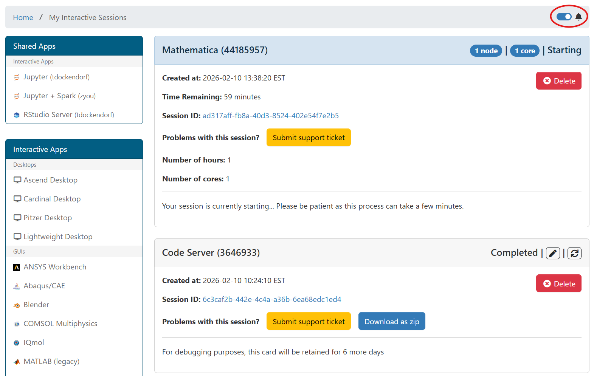
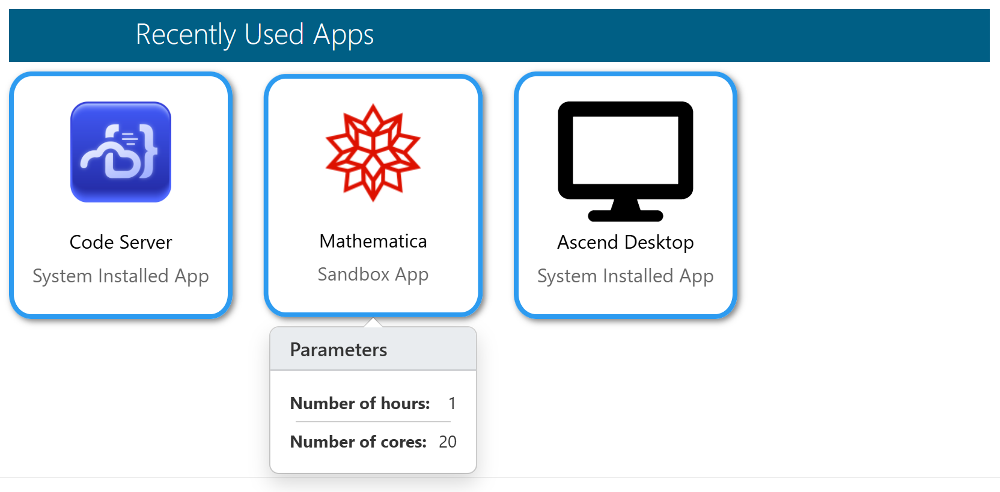
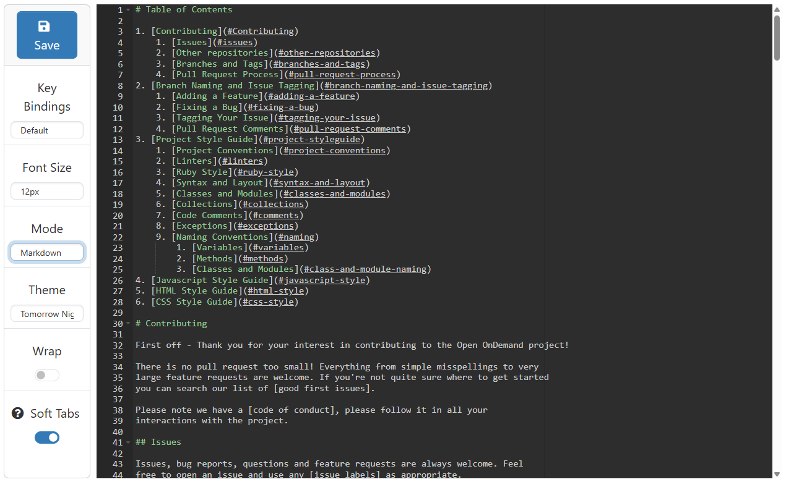
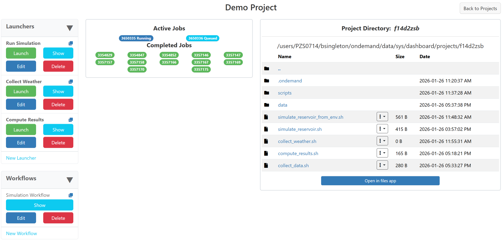
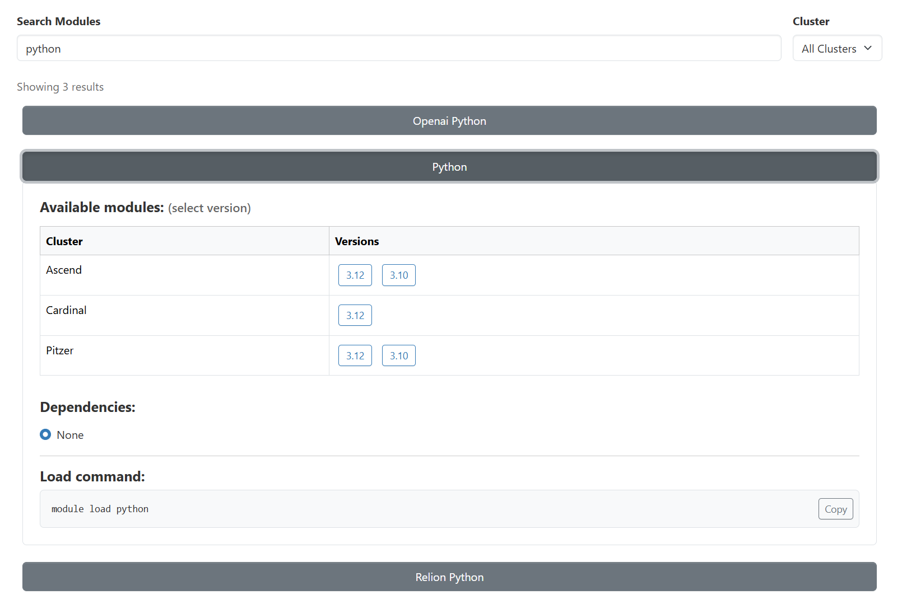

v4.1 Release Notes
Acknowledgments
Thank you to all of the community members who contributed code, documentation, suggestions, bug reports, and other assistance across the project! We would like to recognize the following individuals and groups for their significant contributions to the Open OnDemand 4.1 release.
University of Maryland
Alan Sussman and Harshit Soora contributed major enhancements to the Project Manager, expanding support for managing composite job workflows within Open OnDemand. Their work improves how users organize, construct, and execute multiple batch jobs all through the Project Manager.
Cendio AB
Robert Henschel, Mattias Reuterskiöld, William Sjöblom, and Jean Zagonel contributed to the development of the ThinLinc integration with Open OnDemand. This integration provides an additional option for delivering Linux desktop sessions through Open OnDemand. Additionally, building on foundational work by Jonathan Goodson (NIH) to support proxying to secure origins (interactive applications) over HTTPS, their efforts helped complete and integrate this functionality for version 4.1. A beta version is available for testing here in the project repository.
Harvard University IQSS and the Dataverse Team
Leonard Wisniewski, Phil Durbin, Aday Bujeda, William Horka, Michael Reekie, and colleagues from the IQSS and Dataverse teams contributed documentation and implementation support for the ServiceNow integration, along with various bug fixes and enhancements across dismissible announcements, user home directories, shared app rendering, and a configurable button in the Files app. They also created OnDemand Loop, a companion application that streamlines data movement between HPC clusters and repositories like Dataverse or Zenodo. By replacing complex command-line workflows with an intuitive interface, it lowers technical barriers and enables researchers to manage datasets directly within their computing environment. More information is available here at the OnDemand Loop documentation site.
We'd also like to extend a big thank you to those listed below for contributing to Open OnDemand for the
first time in this release. These contributions span the ondemand, ood_core, and
ood-documentation GitHub repositories and include 44 first-time contributors.
wpoely86made their first contribution in #4068harshit-sooramade their first contribution in #4069hansen-mmade their first contribution in #4111junousimade their first contribution in #4122JanssenAaronmade their first contribution in #4133hsmallbonemade their first contribution in #4142devanyk2made their first contribution in #4166adamboutchermade their first contribution in #4212genericdatamade their first contribution in #4237Vibe-Guymade their first contribution in #4355yuvipandamade their first contribution in #4410bedroesbmade their first contribution in #4439simonLeary42made their first contribution in #4476Bubballoo3made their first contribution in #4492twhiteheadmade their first contribution in #4504brandonbiggsmade their first contribution in #4511moffatsadeghimade their first contribution in #4534nd996made their first contribution in #4561epruessemade their first contribution in #4586mw-amade their first contribution in #4601RuttJenmade their first contribution in #4582jmeddickmade their first contribution in #4532yarikopticmade their first contribution in #4671GlazerMannmade their first contribution in #4721jgoodsonmade their first contribution in #4710mrgummade their first contribution in #4747honza801made their first contribution in #4784fodinabormade their first contribution in #4814Cinnamalsmade their first contribution in #4839pddro-Vestasmade their first contribution in ood_core#865andrejcermakmade their first contribution in ood_core#871tat-ohmuramade their first contribution in ood_core#883dev-sda1made their first contribution in ood_core#914kwkoepcke3made their first contribution in ood_core#916romulojalesmade their first contribution in ood-documentation#980rwxayheeemade their first contribution in ood-documentation#1097davidecarlsonmade their first contribution in ood-documentation#1099jennyfothergillmade their first contribution in ood-documentation#1122ndjonesmade their first contribution in ood-documentation#1128bpayntermade their first contribution in ood-documentation#1167aharralmade their first contribution in ood-documentation#1187JinyuHan99made their first contribution in ood-documentation#1193saracookmade their first contribution in ood-documentation#1198Pennswoodmade their first contribution in ood-documentation#1203
Known issues
System Status Shows Zero GPUs in Use
Some centers may see the system-status application showing 0 GPUs in use.
This is an issue with the code-base not recognizing certain sinfo output like gpu:(null):1(IDX:0)
in the gresused field for Slurm.
To get around this, users can provide this initializer in the commented location below to patch their systems.
# /etc/ood/config/apps/dashboard/initializers/gpu_fix.rb Rails.application.config.after_initialize do require 'ood_core/job/adapters/slurm' class OodCore::Job::Adapters::Slurm < OodCore::Job::Adapter # patch gpus_from_gres to incorporate https://github.com/OSC/ood_core/pull/925 def self.gpus_from_gres(gres) gres.to_s.scan(/gpu[s:]*[\w()-]*[=:]?(\d+)(?:[(,]|$)/).flatten.map(&:to_i).sum end end end
Breaking Changes and Deprecations
NodeJS breaking change
4.1 has upgrade NodeJS dependency. See the operating system support changes
and NodeJS dependency changes listed in the next two sections.
Stripping Sensitive Headers
For additional security, 4.1 will now strip certain sensitive headers when proxying to interactive applications. See the Strip Sensitive Headers and Cookies section below for more details.
Job Composer is now Deprecated
The Job Composer is officially deprecated in 4.1, and will no longer receive new features or bug fixes beyond critical maintenance. Although the new Project Manager covers and surpasses all Job Composer functionality, the Job Composer will remain enabled as a legacy feature until version 5.0.
Operating System Support
Open OnDemand version 4.1 adds support for RHEL/Rocky/AlmaLinux 10.
Open OnDemand version 4.1 drops support for Ubuntu 20.04.
Dependency Updates
This release updates the following dependencies:
Passenger 6.1.0
NGINX 1.26.3
ondemand-dex 2.44.0
NodeJS 22 (Every OS)
Bootstrap 5
Warning
The change in NodeJS version means any Node-based apps that are not provided by the OnDemand RPM must be rebuilt or supply their own Node Wrapper to use the older version of NodeJS.
SELinux Changes
Add the ondemand_manage_config_dir boolean to allow Open OnDemand to manage .config directories labeled with config_home_t
Authentication and Security
Software Bill of Materials
Open OnDemand version 4.1 includes a Software Bill of Materials (SBOM) outlining the operating system-level software dependencies for Open OnDemand. For more information, please see the Requirements section of the documentation.
Lower-casing in User Mapping
The user_map_match configuration now
responds to :lower to automatically lowercase REMOTE_USER when matching
against it.
See the user_map_match documentation for more details.
Proxying to Origins Over HTTPS
Version 4.1 introduces the ability to proxy to origin servers over HTTPS protocol.
While continuing to support plain-text origins through node_uri and
rnode_uri, we've added secure_node_uri and secure_rnode_uri
configurations in ood_portal.yml.
See the ood_portal.yml configuration for secure proxies for more information.
Expanded Registration Options
More ood_portal.yml options for registering users have been added in version 4.1.
They are register_path, register_method, and register_method_options.
See Configure User Registration for more details.
Platform Configuration, Operations, and Observability
Passenger Telemetry Now Disabled By Default
Passenger anonymous telemetry
is now disabled by default in version 4.1. If you would like to override this default
and enable Passenger telemetry, you can add passenger_disable_anonymous_telemetry: 'off'
to your passenger_options hash. Note that this change has also been
backported in the 4.0.4 and 3.1.12 releases.
Shell Terminal is Now Configurable
The new OOD_SHELL_TERM environment variable allows the default TERM=xterm-16color
to be overridden. This variable can be set to any other terminal type whose escape codes are
fully supported by the underlying hterm library.
Some other common supported options include xterm, xterm-256color, and xterm-direct.
This environment variable can only be set from /etc/ood/config/apps/shell/env.
Shell Logs Have Added Prefixing
Each shell log entry is now prefixed with the user, host, and PID associated with the shell session, allowing users and administrators to differentiate between log entries produced by simultaneous sessions.
Grafana Integration Allows GPU panels
The Grafana panels visible in Active Jobs now display gpu-util and gpu-memory data if configured.
To enable these additional panels, add the panelId values in your cluster configuration in the same way
as the pre-existing cpu and memory panels. For more details on integration with Grafana and how to
configure it, see Grafana support.
Accessibility and Usability
Accessibility Conformance Report (ACR)
Open OnDemand version 4.1 includes an Accessibility Conformance Report (ACR) and the project plans to provide an updated report for each major and minor release. Findings from the version 4.1 ACR will inform ongoing accessibility improvements in future releases. The ACR is available on our accessibility page at openondemand.org/accessibility.
Dynamic Forms and Session Cards Announce to Screen Readers
Dynamic batch connect forms now alert screen readers when form items are changed, allowing visually impaired users to better understand what is happening on the page. This is supported by all dynamic form actions. Similarly, interactive session cards provide live announcements when job status changes between queued, running, and completed.
New Dashboard Widgets
New dashboard widgets have been added in this release. They include balances, file_quotas,
nsf_access_events, and system_status.
For ACCESS Resource Providers (RPs), the nsf_access_events widget provides a centralized
view of upcoming ACCESS events relevant to your site through the Open OnDemand dashboard.
Additional RP-focused widgets are planned for future releases.
See Custom layouts in the dashboard for more details.
New Canadian Internationalization Files
Open OnDemand version 4.1 will be the first to include Canadian internationalization files for both English and French, thanks to Rahim Khoja of the University of Alberta. This adds to pre-existing internationalization files for American English, Chinese, and Japanese. It is easy to customize or generate your own localization files, and we greatly appreciate community contributions for languages we do not include by default. In addition to making it easier for others in your country or region to use Open OnDemand, contributed localization files will also be automatically updated with new releases.
New Demo Container
A new demo container has been made available, allowing you to spin up a lightweight and preconfigured OnDemand instance on your own machine. The container allows you to preview all of the basic file management, the shell, and batch connect features Open OnDemand has to offer, including running a full, interactive Jupyter server. For more details and directions on how to pull down and run the demo, see the ood-demo repository on GitHub.
Interactive Jobs and Applications
Batch Connect Apps Cache ERB Content
All batch connect apps now cache ERB content, allowing expensive ERB operations to be
done in form.yml.erb without burdening the web server on each page visit. For app
development, this means that changes may not be picked up right away, and you may need
to periodically clear the cache by selecting Help → Restart Web Server from the top
right of the navigation bar. For more details on using ERB in user forms, see
User Form (form.yml.erb).
Sessions Cards Show Cores and GPUs Requested
Session cards now have widgets to display cores and GPUs available to the job, making it easier to view the parameters of current or past jobs when re-running for your next session. Please note that resource widgets will only appear when the quantity requested is greater than 0.
New Option For Interactive Session Notifications
The 'My Interactive Sessions' page now has a switch to enable notifications. When turned on, the browser will present notifications to the user when their session changes state. This is most useful for centers with long queue times, as users no longer need to actively monitor their jobs to know when they start running.

Forms, Widgets, and User Input
New bc_num_nodes Smart Attribute
Open OnDemand now offers the bc_num_nodes smart attribute, which allows you to request nodes
consistently across schedulers. This replaces the bc_num_slots smart attribute, which selected
either nodes or cores depending on the scheduler. For more details, see bc_num_nodes.
New auto_cores Functionality
Version 4.1 offers the auto_cores smart attribute, which allows you to request cores across schedulers.
When used alongside the auto_batch_cluster attribute, this ensures that the number of cores selected is valid
for the cluster you are submitting to. For more details, see auto_batch_clusters and auto_cores.
Automatic Attributes Support Accounts with Special Characters
The account-aware auto_queues and auto_qos now support account names with special characters, widening their
compatibility with more centers. This was prioritized for account names as these are among the hardest to modify, but
the same special character support can be added to other automatic attributes like clusters or queues upon request.
Note that in order to get the account-aware features from these attributes, they must be used along with
auto_accounts.
Global Batch Connect Items Can Override Predefined Attributes
It is now possible to modify the predefined attributes
using global definitions. This works similarly to other Global Batch Connect Form Items, except that the attribute name
must be the predefined attribute name prefixed with global_, and you only have to define attributes you want to change.
See the full section on Global Batch Connect Form Items for more details.
New data-alias Directive
The new data-alias directive allows you to create conditional option-for and exclusive-option-for directives
for values with special characters. It is recommended to use this for all conditional values that contain characters
outside the lowercase alphabet and digits. For more details, see Option Value Aliases.
New data-help Directive
Version 4.1 adds the data-help directive, allowing you to dynamically change
the help text below form items when certain select options are chosen. For example,
you may have a node_type select widget, where type basic has older GPUs than
advanced. The data-help directive can change the help text on the num_gpus
option for users who select advanced so that they can take that info into account
when deciding how many GPUs to select. For full documentation, see Dynamic Help Text.
Form Items Accept Markdown Headers
Batch connect form items accept a header attribute, which can be used to render
markdown above the item's label. Headers can provide useful structure to forms, and
are not affected when the item is hidden, or by any other dynamic form actions. For
full documentation, see Form Item Headers.
Path Selectors Accept Custom Titles
The title on the path selector modal is now customizable, allowing you to accurately represent what the selected path will be used for. For more details, see the full path selector documentation.
Recently Used Apps Display Recent Settings
A popup has been added to the recently_used_apps dashboard widget allowing you to
preview the settings that will be submitted by hovering over the app icon.

Only attributes
with display: true will appear in this popup, and passwords will never appear. For full
documentation on how to add recently_used_apps to your homepage and configure which
attributes to display, see Dashboard Widgets and
Attribute Display Option.
Files, Projects, and Data Management
File Browser Can Now Render HTML Files
Open OnDemand version 4.1 brings back HTML rendering within the files app, allowing users
to open and view HTML files directly. This is disabled by default, due to security
concerns, but can be enabled by setting OOD_UNSAFE_RENDER_HTML=true in your
environment or including unsafe_render_html=true in your ondemand.d/*.yml files.
File Downloads Have a Maximum Size
Version 4.1 adds a configurable maximum size for file downloads, which also applies to
opening files in the file browser. This can be configured with the OOD_DOWNLOAD_FILE_MAX
environment variable, or setting download_file_max in your ondemand.d/*.yml files.
This variable accepts plain integer values, and defaults to 10GiB. Please note that size
configurations always accept an integer number of (binary) bytes, so the default 10GiB
would be represented as 10737418240. For more details on this configuration, as well
as a similar one for directory downloads, see Set Download Limits.
File Editor Has a Maximum Size
In version 4.1, the file editor will not open files above a configurable maximum size. The default is 12MiB,
but this can be changed by setting the OOD_FILE_EDITOR_MAX_SIZE environment variable, or setting
file_editor_max_size in your ondemand.d/*.yml files. This uses the same binary byte format as
OOD_DOWNLOAD_FILE_MAX above, so the 12MiB default would be represented as 12582912.
File Editor Toggles Hard and Soft Tabs
The file editor now supports toggling between hard and soft tabs with a switch on the left panel. While both use the tab key, hard tabs refer to tab characters, and soft tabs are space characters used for indentation.

This is most relevant to languages that rely on consistent indentation, most notably Python and YAML. For YAML files, only soft tabs are syntactically supported. Python recommends soft tabs for new projects, but will not allow mixing of hard and soft tabs within a project.
The Project Manager
Version 4.1 enables the Project Manager by default, a new alternative to the Job Composer that brings the automatic scheduler interaction of batch connect forms to your personal job scripts. In addition to this core functionality, it also provides support for workflows that can submit multiple dependent jobs at once, and easy collaboration on projects among teams. The core functionality will work without modification, but collaborative projects work best when used with properly configured shared directories.

For more details on customization and configuration, see the Project Manager docs, and for an example-driven guide intended for users, see Tutorials: Project Manager.
Help, Support and Institutional Integration
ServiceNow support tickets
Centers can now send support tickets to ServiceNow from Open OnDemand. See ServiceNow API for more details.
Module Browser Page
Centers that have enabled lmod module suppport for OnDemand to read all the modules on clusters will now see a web page for searching and displaying these modules.

This new page is under the 'Clusters' menu in the navigation bar.
Upgrade Instructions
Warning
Update the development and/or test instances of OnDemand installed at your center before you modify the production instance.
Warning
We have tested the upgrade from version 4.0.8 to version 4.1.0 at OSC's Open OnDemand instance.
Update Open OnDemand repository.
sudo yum install -y https://yum.osc.edu/ondemand/4.1/ondemand-release-web-4.1-1.el8.noarch.rpm
sudo yum install -y https://yum.osc.edu/ondemand/4.1/ondemand-release-web-4.1-1.el9.noarch.rpm
wget -O /tmp/ondemand-release-web_4.1.0-jammy_all.deb https://apt.osc.edu/ondemand/4.1/ondemand-release-web_4.1.0-jammy_all.deb sudo apt install /tmp/ondemand-release-web_4.1.0-jammy_all.deb sudo apt update
wget -O /tmp/ondemand-release-web_4.1.0-noble_all.deb https://apt.osc.edu/ondemand/4.1/ondemand-release-web_4.1.0-noble_all.deb sudo apt install /tmp/ondemand-release-web_4.1.0-noble_all.deb sudo apt update
wget -O /tmp/ondemand-release-web_4.1.0-bookworm_all.deb https://apt.osc.edu/ondemand/4.1/ondemand-release-web_4.1.0-bookworm_all.deb sudo apt install /tmp/ondemand-release-web_4.1.0-bookworm_all.deb sudo apt update
sudo dnf install -y https://yum.osc.edu/ondemand/4.1/ondemand-release-web-4.1-1.amzn2023.noarch.rpm
(RHEL/Rocky/AlmaLinux 8 & 9 only) Enable dependency repositories.
sudo dnf module reset nodejs sudo dnf module enable nodejs:22
Update Open OnDemand.
sudo yum clean all sudo yum update ondemand
sudo apt-get --only-upgrade install ondemand
(Dex users only) Update the
ondemand-dexpackage.sudo yum update ondemand-dex
sudo apt-get --only-upgrade install ondemand-dex
Update Apache configuration and restart Apache.
sudo /opt/ood/ood-portal-generator/sbin/update_ood_portalsudo systemctl try-restart httpd
sudo systemctl try-restart apache2
sudo systemctl try-restart httpd
(Dex users only) Restart the
ondemand-dexservice.sudo systemctl try-restart ondemand-dex.service
(SELinux users only) Update SELinux policies.
Force all PUNs to restart.
sudo /opt/ood/nginx_stage/sbin/nginx_stage nginx_clean -f